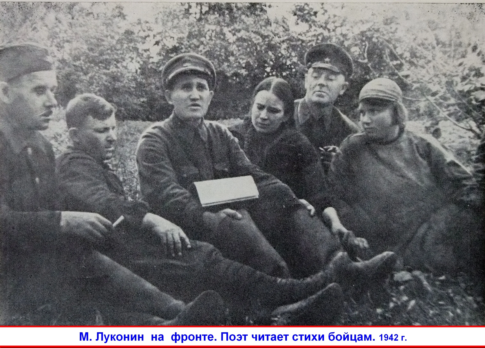
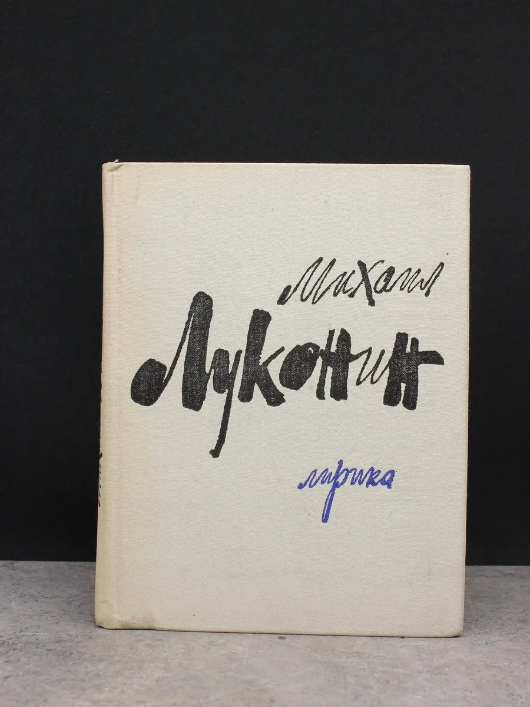

Михаил Кузьмич Луконин (1918–1976) — советский поэт, военный корреспондент, лауреат Государственной премии СССР (1973). Родился 29 октября 1918 года в селе Клинцы (ныне Волгоградская область).
Участник Великой Отечественной войны, награждён орденами и медалями. После войны жил и работал в Волгограде, где создал свои главные произведения.

Детство и юность
Михаил Луконин родился в семье крестьянина. В 1935 году поступил в Сталинградский педагогический институт. В 1938 году были опубликованы его первые стихи. В 1940 году окончил Литературный институт имени А.М. Горького в Москве.
Военные годы
С первых дней Великой Отечественной войны Луконин ушёл на фронт. Служил военным корреспондентом в газетах «Красная Армия» и «Сталинградская правда». Прошёл путь от Волги до Берлина. Военные впечатления легли в основу многих его произведений, в том числе поэмы «Рабочий день».

Творчество
Основные темы творчества Луконина — война, труд, любовь к Родине. Среди известных произведений: сборники стихов «Лирика» (1958), «Перед рассветом» (1961), «Дорога в завтра» (1964), «Стихи» (1969). В 1973 году за сборник «Память» был удостоен Государственной премии СССР.

Последние годы и наследие
Умер Михаил Кузьмич Луконин 4 августа 1976 года в Волгограде. Похоронен на Мамаевом кургане. В 1980 году в его квартире на набережной Волги был открыт мемориальный музей, который сегодня является филиалом Волгоградского областного краеведческого музея.
vokm@volganet.ru; www.vokm134.ru
*Администрация оставляет за собой право изменить время и тему мероприятия.